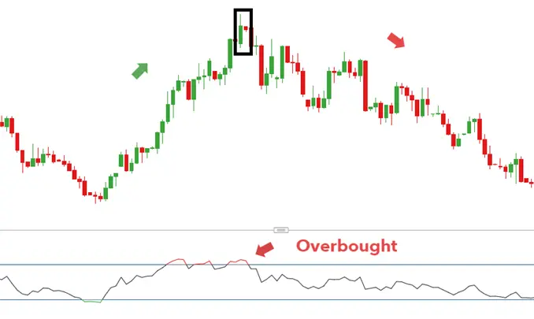
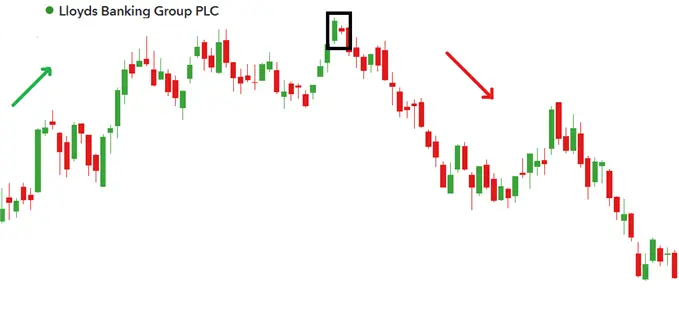
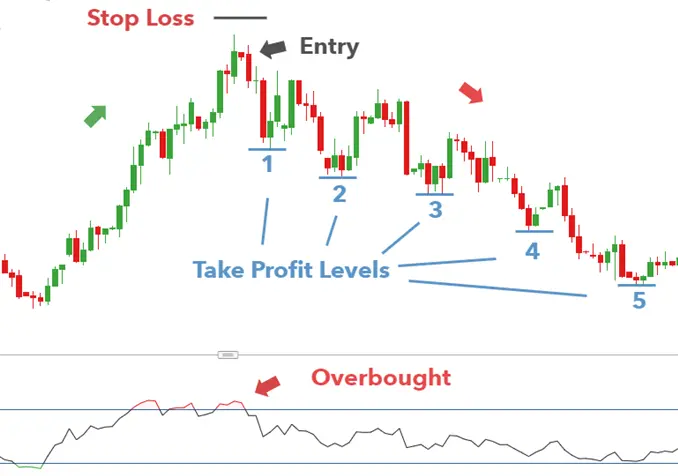

The Bearish Harami pattern is a reversal pattern appearing at the top of an uptrend. It consists of a bullish candle with a large body, followed by a bearish candle with a small body enclosed within the body of the prior candle. As a sign of changing momentum, the small bearish candle ‘gaps’ down to open near the mid-range of the previous candle.

The opposite of the Bearish Harami is the Bullish Harami and is found at the bottom of a downtrend.
| HOW TO IDENTIFY A BEARISH HARAMI ON TRADING CHARTS |
Identify existing uptrend.
| Formation of the Bearish Harami Pattern in the Forex market |
The forex market operates on a 24/5 basis which means when one candle closes, another opens at virtually the same level as the previous candle’s closing price. This is often observed under normal market conditions but can change during periods of high volatility. The Bearish Harami pattern in forex will often look something like this:

The small red candle opens close to, or at the level that the prior bullish candle closed at. This is typically observed in the forex market.
| Formation of the Bearish Harami Pattern in Stocks |
Stocks, on the other hand, have specified trading hours during the day and are known to gap down at the open for many reasons. Some of those might be:
Therefore, the more traditional Harami pattern appears, as seen below for FTSE 100 stock, Lloyds Banking Group PLC:

Notice how there are numerous areas on the chart where the market has gapped - showing wide open spaces between candles. This is often observed in the stock market.
| HOW TO TRADE THE BEARISH HARAMI CANDLESTICK PATTERN |
Traders can adopt the Bearish Harami 5-step checklist mentioned earlier in the article. Looking at the USD/SGD chart from earlier, we can observe the following:
Stops can be placed above the new high and traders can enter at the opening of the candle following the completion of the Bearish Harami pattern. Since the Bearish Harami appears at the start of a potential downtrend, traders can include multiple target levels to ride out a new extended downtrend.
